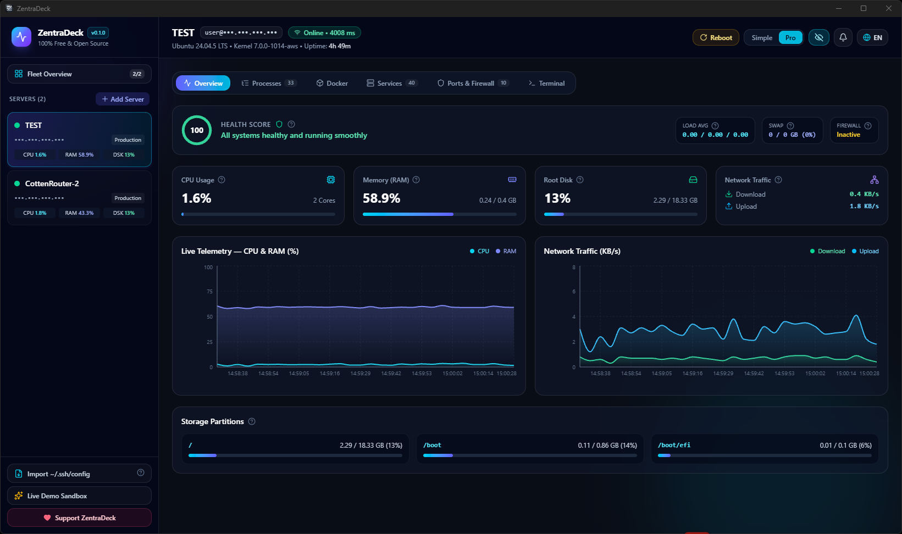

One native desktop command center packing Multi-Server Broadcast & Snippets Vault, 1-Click Security & SSL Audit, Forensic History Reports, Interactive PTY Terminal, and Atomic SFTP Editor—engineered to run under 15 MB Go RAM (50%+ leaner Windows footprint) with 100% local, zero-telemetry privacy.

Built for developers and sysadmins tired of 400 MB Electron wrappers, intrusive VPS monitoring daemons, and paywalled SSH tools. Everything runs locally on your machine with strict memory and security budgets.
Enforced Go GC ceiling (GOGC=25, GOMEMLIMIT=14 MiB), React.lazy code-splitting, and disabled WebView2 GPU overhead cut Windows private RAM by over 50% (~191 MB total). On your servers: zero agents, zero extra ports—plain SSH only.
Every release must pass an automated CI security gate (govulncheck, npm audit, static zero-telemetry checks). Credentials use AES-256-GCM via your OS Keychain, SSH keys verify via TOFU, and every binary ships with SHA256SUMS.txt.
Combines Multi-Server Broadcast & 23+ Snippets, Security & SSL Auditing, Forensic History Reports, Interactive PTY, Atomic SFTP Editor, Docker/Systemd, and System Tray Alerts. Both Simple & Pro Modes are 100% free under MIT.
Switch effortlessly between clean everyday essentials and deep Pro diagnostics across Ubuntu, Debian, AlmaLinux, Rocky, CentOS, Fedora, Arch, and AWS EC2.
Run one SSH command across multiple servers simultaneously with per-server output & destructive-command safety warnings, backed by 23 built-in commands plus custom reusable snippets.
Agentless SSH security scoring, Fail2ban/firewall checks, local SSL expiry alerts (<30d) with copyable fix commands, plus a Visual Cron Job Manager & Systemd Timers viewer.
Analyze CPU, RAM, I/O Wait, Steal & Network trends (sysstat) alongside journald crash/OOM timelines, Stability Score, and 1-click localized .md/.txt report export.
Full @xterm/xterm PTY supporting htop, vim, nano, sudo, 1-click container shells, localized toolbar tooltips, fullscreen, font zoom, and a green PTY sidebar indicator.
Browse, upload, download, and edit configs with atomic POSIX writes (zero half-written configs), Undo/Redo, Find & Replace, pooled channels, and critical Linux path guards.
Minimize to the system tray (Windows & Linux) for silent fleet monitoring with per-server CPU, RAM, Disk & Offline alert thresholds delivered via native OS notifications.
Track every server in one grid with live latency, uptime, instant 0–100 health score, swap telemetry, live CPU/RAM/network graphs, and full storage partition breakdown.
Control containers and systemd services, launch container shells, and read journalctl / Docker logs with Auto Line-Wrap, Copy All, Fullscreen, and clean LTR formatting.
Sort remote processes by CPU, RAM, or PID with localized Linux process descriptions, and inspect listening TCP/UDP ports (ss -tulnp) and UFW/firewalld status.
Instant (0ms) per-server workspace switching with preserved PTY/SFTP state, per-server SOCKS5 proxy routing, and 1-click ~/.ssh/config import.
Every module, tooltip, Linux service description & exported report is 100% localized in English, فارسی (RTL + offline Vazirmatn), 中文, Deutsch, Français, Español, Português, Русский, 日本語, 한국어 & Bahasa Indonesia.
Test the full multi-server dashboard offline with zero credentials in Demo Sandbox, and toggle Privacy Mode to mask IPs and hostnames during screen shares.
Purpose-built for instant, agentless desktop operations over SSH—without heavy Electron runtimes, subscriptions, or cloud lock-in.
| Aspect | ZentraDeck v0.4.1 | Electron SSH Apps Termius, Tabby |
Agent / Web Tools Netdata, Glances, Cockpit |
Raw CLI SSH ssh, top, sftp |
|---|---|---|---|---|
| Desktop RAM | <15 MB Go core + 50%+ leaner OS WebView (React.lazy) | 300–600+ MB (Chromium) | Browser + server daemon | Minimal native terminal |
| Remote Server Agent | None (Plain SSH & SFTP) | None | Requires agent / daemon | None |
| Privacy & Telemetry | 100% Local · CI-Audited Zero Telemetry | Cloud sync / accounts common | Self-hosted or cloud | Local config files |
| Built-In Toolkit | Broadcast & Snippets + Security/SSL Audit + History Reports + PTY + Atomic SFTP + Docker + Tray | Terminal & SFTP (often paywalled) | Monitoring focused | Manual CLI commands |
| Linux Packages | .AppImage, .deb, .rpm, Arch, .tar.gz | Varies by vendor | Server package / Docker | Pre-installed |
| Pricing | 100% Free Forever (MIT) | Freemium / subscription | Open source / paid tiers | Free |
Security isn't a footnote—every release passes an automated pre-release security audit before a single binary is published.
• No analytics, no tracking, no crash reporters, no cloud accounts.
• Zero outbound connections except to SSH servers (and optional SOCKS5 proxies) you configure.
• CI blocks any release if forbidden net/http, fetch, axios, WebSocket, or eval sinks exist.
• Inventory encrypted locally with AES-256-GCM using a 256-bit key stored in your OS Keychain.
• Passwords & private keys are write-only in the UI—never echoed back to the frontend.
• SSH host keys verified via known_hosts / TOFU to protect against MITM attacks.
• Atomic SFTP writes prevent half-written configs on drops; critical system paths (/etc, /boot, /usr) are protected from deletion.
• Built on the latest patched Go toolchain verified by go vet, govulncheck, and npm audit.
• Strict 0600/0700 local permissions on secrets, backups & reports, plus SHA256SUMS.txt on every release.
Audited & built automatically via GitHub Actions on the v0.4.1 Release page.
NSIS installers and portable zips (~6–8 MB). On unsigned open-source builds, Windows SmartScreen may ask to click More info → Run anyway.
Single universal build (~11–12 MB) for M-series and Intel Macs. If blocked by Gatekeeper, right-click → Open or run xattr -cr /Applications/ZentraDeck.app.
Native packages (~5–8 MB) for Ubuntu/Debian (.deb), Fedora/RHEL/openSUSE (.rpm), Arch/Manjaro (.pkg.tar.zst), plus universal .AppImage & .tar.gz.
sha256sum -c SHA256SUMS.txt --ignore-missing
ZentraDeck is actively developed, and with every release we strive to add more practical, community-requested features while staying lightweight, local-first, zero-telemetry, and 100% free.
Built-in Theme Picker featuring clean neutral dark themes (Carbon / Zinc) alongside classic dark and light presets.
Password-protected local backup and transfer of your server inventory across multiple PCs—zero cloud accounts needed.
Continuous operator tools, security checks, and workflow enhancements shaped directly by GitHub Issues and PRs.
100% auditable Go + Wails + React/TypeScript source code. On Linux with WebKit2GTK 4.1, append -tags webkit2_41.
git clone https://github.com/CyberRhythm/ZentraDeck.git
cd ZentraDeck
wails build -clean